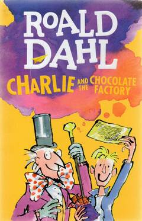

Charlie and the Chocolate Factory

Charlie Bucket adalah seorang bocah miskin yang tinggal di dekat Perusahaan Cokelat dan Permen Wonka.
Pemilik perusahaan, Willy Wonka, menutup pabriknya dalam waktu lama karena resep cokelat dan permennya dicuri oleh para pegawainya sendiri.
Willy Wonka pun memecat seluruh pergawa yang salah seorang diantaranya yakni kakek Charlie, Joe. Suatu hari, Wonka mengumumkan kontes, di mana ada beberapa tiket emas telah ditempatkan di lima bungkus cokelat Wonka dan disebar acak di seluruh dunia, dan pemenang akan diberikan tur pabrik seharian serta pasokan cokelat seumur hidup, sementara satu pemegang tiket yang menang dalam tur tersebut akan diberikan sebuah hadiah spesial di akhir tur.
Penjualan Wonka kemudian meroket, dan empat tiket pertama ditemukan cukup cepat.
Penerima adalah Augustus Gloop, bocah lelaki Jerman yang rakus; Veruca Salt, seorang gadis Inggris yang sangat manja; Violet Beauregarde, seorang pengunyah permen karet yang arogan, dan Mike Teavee, seorang pecandu televisi dan video game yang pemarah.
Charlie mencoba dua kali untuk menemukan tiket, tetapi kedua batangnya kosong. Setelah mendengar bahwa tiket terakhir ditemukan di Rusia, Charlie menemukan uang kertas sepuluh dolar, dan membeli sebungkus cokelat Wonka di sebuah toko berita.
Pada saat yang tepat terungkap bahwa tiket Rusia dipalsukan, Charlie menemukan tiket kelima yang sebenarnya di dalam bungkusnya. Charlie mencoba dua kali untuk menemukan tiket, tetapi kedua batangnya kosong. Setelah mendengar bahwa tiket terakhir ditemukan di Rusia, Charlie menemukan uang kertas sepuluh dolar, dan membeli sebungkus cokelat Wonka di sebuah toko berita.
Charlie menerima penawaran uang untuk tiket, tetapi memutuskan untuk menyimpannya dan akhirnya ia didampingi oleh kakeknya untuk tur ke pabrik cokelat Wonka
Charlie dan pemegang tiket lainnya disambut oleh Wonka di luar pabrik, yang kemudian membawa mereka ke fasilitas yang ada di pabrik.
Cacat karakter individu menyebabkan empat anak menyerah pada godaan, dihilangkan dari tur, dan Oompa-Loompas (makhluk khas binaan Willy Wonka) menyanyikan lagu moralitas setelah setiap eliminasi.
Selama tur, kilas balik mengungkap masa lalu Wonka yang bermasalah; ayahnya, seorang dokter gigi terkemuka bernama Wilbur, melarang keras Wonka untuk mengkonsumsi permen karena risiko yang mungkin terjadi pada giginya, dan juga membuat Wonka memakai kawat gigi yang sangat tidak nyaman.
Setelah menyelinapkan sepotong permen dan memakannya, Wonka langsung ketagihan, dan lari mengikuti mimpinya menjelajahi citarasa cokelat dan permen diseluruh dunia.
Ketika dia kembali, ayahnya dan rumah mereka pergi.
Setelah tur, keempat anak meninggalkan pabrik dengan karakteristik berlebihan atau kelainan yang berkaitan dengan kematian mereka, sementara Charlie mengetahui bahwa Wonka bermaksud untuk menemukan ahli waris yang layak untuk pabriknya.
Karena Charlie adalah "yang paling sopan" dari lima anak lain, Wonka mengundang Charlie untuk tinggal dan bekerja di pabrik bersamanya.
Charlie, pada awalnya menerima, tetapi kemudian diberitahu bahwa satu-satunya syarat adalah ia meninggalkan keluarganya, seperti halnya Wonka.
Charlie menolak, karena keluarganya adalah hal terpenting dalam hidupnya.
Charlie dan keluarganya hidup puas beberapa saat kemudian; Namun, Wonka terlalu tertekan untuk membuat permen seperti dulu, menyebabkan permennya tak laku dan perusahaannya menurun.
Dia menoleh ke Charlie untuk meminta nasihat.
Charlie memutuskan untuk membantu Wonka menghadapi dilema yang ia hadapi dan berdamai dengan ayahnya; Wonka akhirnya menyadari nilai keluarga, sementara ayahnya belajar menerima anaknya secara apa adanya.
Pada akhirnya, Wonka akhirnya mengizinkan keluarga Charlie untuk pindah ke pabrik.
Baca Fullnya